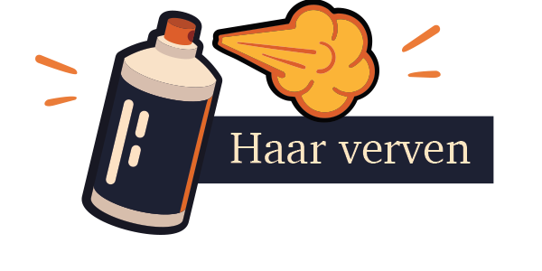
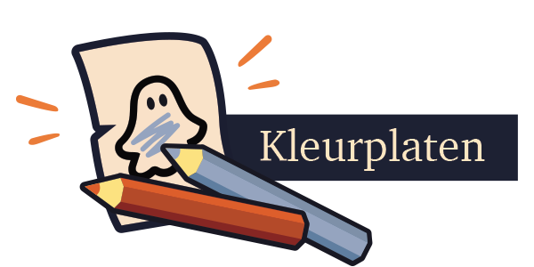
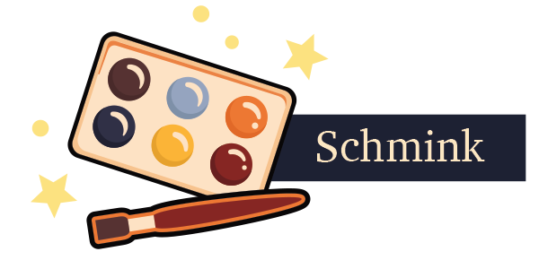
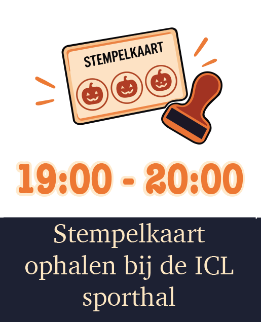
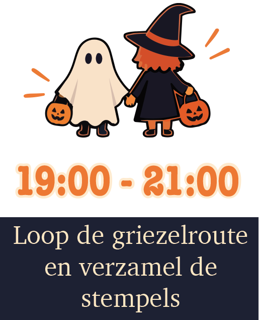
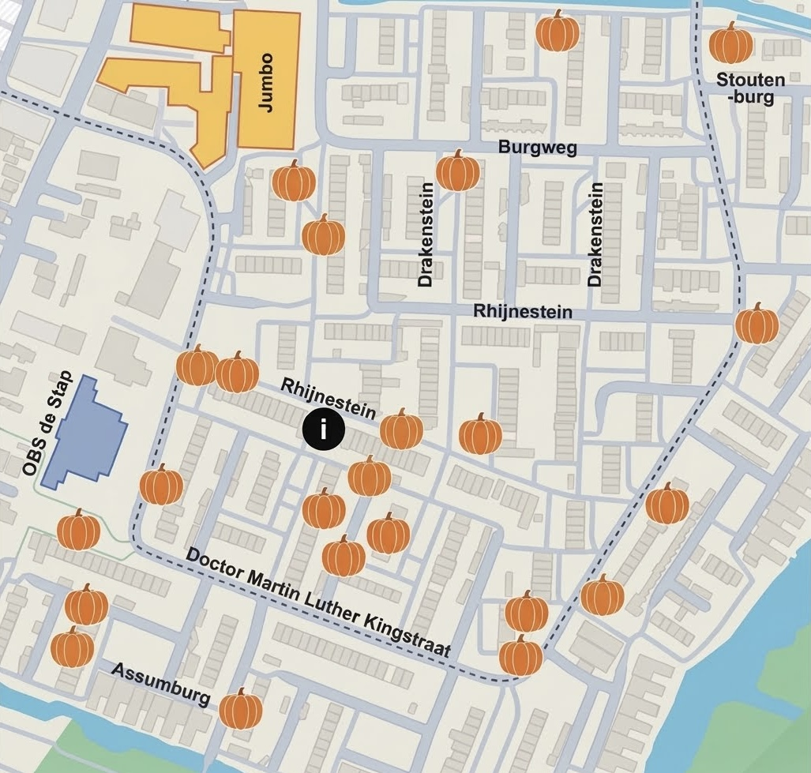

Dag programma
12:00 - 15:00



Avond Programma


Uitleg Avond Programma
Tussen 19:00 en 20:00 kunnen de route- en stempelkaarten opgehaald worden bij Sporthal ICL De remise- Adres Marktplein 11 Aan de hand van deze route kaart kan iedereen zijn eigen route kiezen door de buurt Havenzathe. Als alle huizen zijn bezocht en de stempels zijn verzameld, eindigt de route bij Jumbo waar een “treat” opgehaald kan worden.
De Griezelhuisjes kaart
De route langs de griezelhuizen bevindt zich in de Havenzathe buurt in Landsmeer. Hieronder op de kaart zijn de griezelhuisjes aangeduid met een pompoen. Midden in het gebied is een informatiepunt mocht je huizen niet kunnen vinden or vragen hebben.

Spelregels
- 1Er wordt geen snoep uitgedeeld bij de griezelhuize!
- 2Niet aanbellen bij de oranje cirkel huizen, alleen bij de aangegeven BLAUWE stempel huizen.
- 3Met een volle stempelkaart kan de ‘treat” worde opgehaald worden bij de Jumbo
- 4Gezinnen en vriendengroepjes kunnen met 1 route/stempel kaart doen
- 5Op de avond zelf zal de route ook digitaal staan - via de QR code bij de aanmeld tafel
- 6Er staan vrijwilligers langs de route mochten er onduidelijkheden zijn
- 7De Griezelhuisjes route eindigt om 21:00, zorg dat je voor die tijd terug bent bij Jumbo
- 8Kom graag verkleed 🎃!
Heel veel plezier!
Bereikbaarheid
Sporthal ICL de Remise is makkelijk te bereiken via elke vorm van vervoer. De Griezelhuizen route begint op een loopafstand van 5 minuten van het Marktplein. Parkeren is gratis in Landsmeer en kan voor de deur van ICL de Remise- maar wees alert op de kinderen
De geschiedenis van Halloween
Halloween is begonnen 2000 jaar geleden om het einde van de oogst te vieren op Allerheiligen (1 november), en de avond daarvoor (31 Oktober) werd "all Hallows Eve” genoemd en werd gevierd met lichtjes en kostuums. Niet veel later werd dit ook gebruikt om de doden te herdenken en te vieren… Dit is later bekend komen te staan als het feest Halloween! In veel landen gaan kinderen verkleed met een lichtje langs de deur- waar ze “Trick or Treat” roepen, voor een snoepje. Sinds de eeuwwisseling is het populair geworden om ook de huizen op de route groots te versieren voor de kinderen om te bewonderen.
En dat is het gedeelte dat Landsmeer wil overnemen dit jaar voor Halloween. Landsmeeer heeft natuurlijk de beroemde 11 November Sint Maarten tocht waar kinderen veel snoep krijgen tijdens de wandeling. Dus wil Landsmeer dit jaar bekendstaan om het versieren van de huizen. En zo is de Griezelhuizentocht ontstaan, die dit jaar gehouden wordt in de wijk Havenzathe. Maar hopelijk vanaf volgend jaar in heel Landsmeer!!
Veelgestelde vragen
Contact
Voor verdere vragen kan je ons altijd mailen op: LandsmeerHalloween@gmail.com
Hopelijk tot snel!
Het Spooky Team
Lana, Kim, Linda, Deborah en Kristina